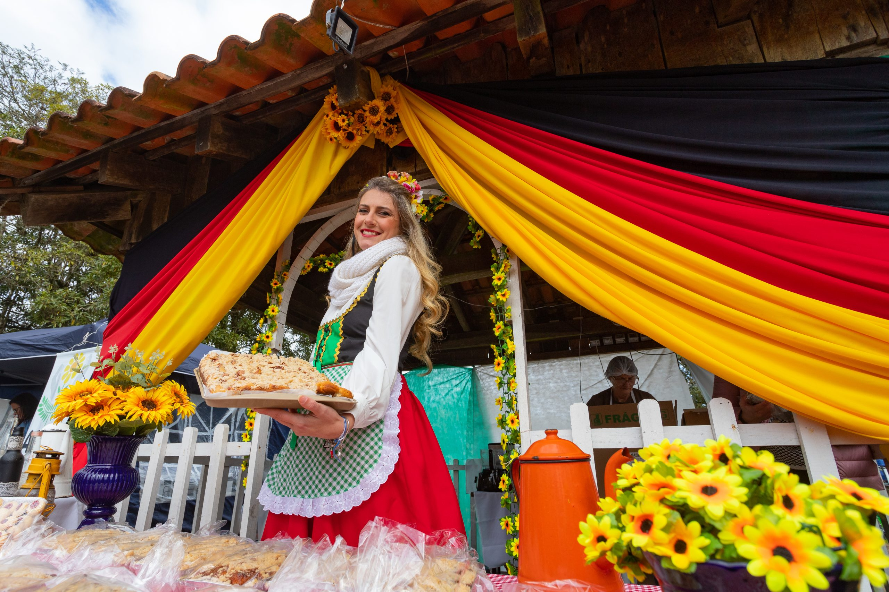
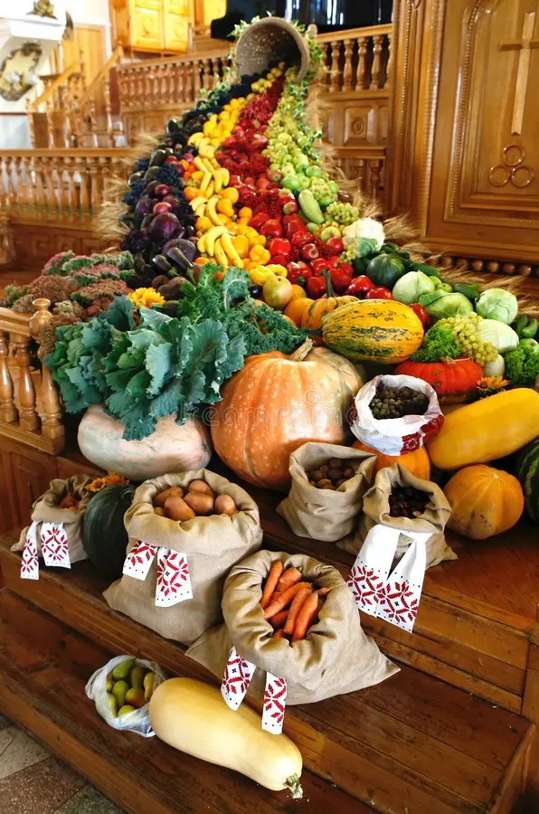
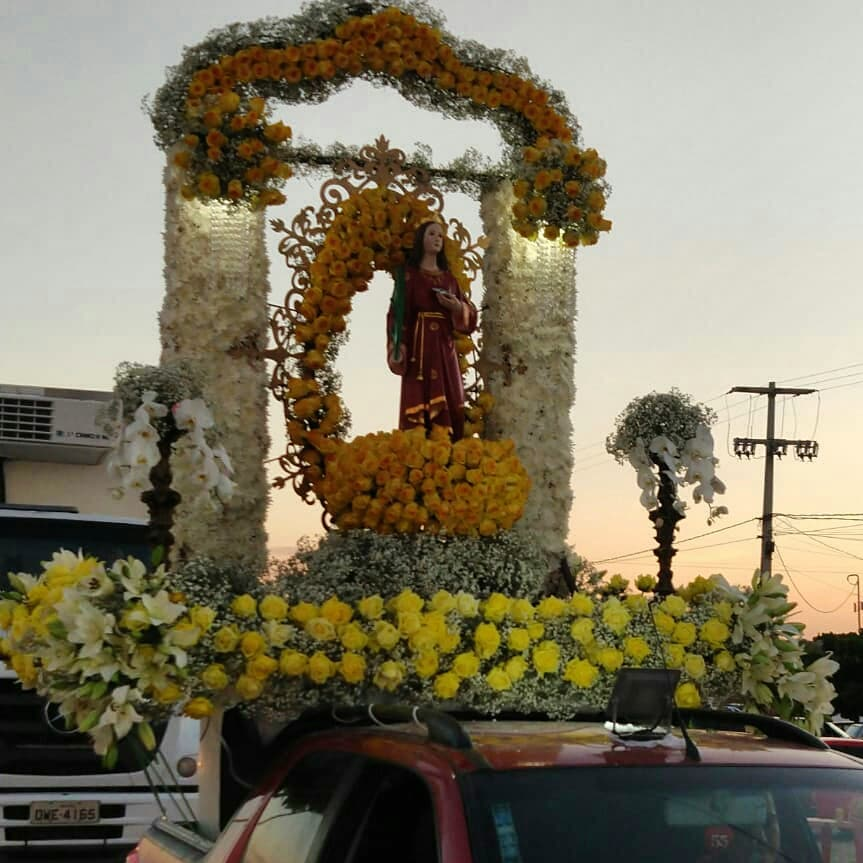
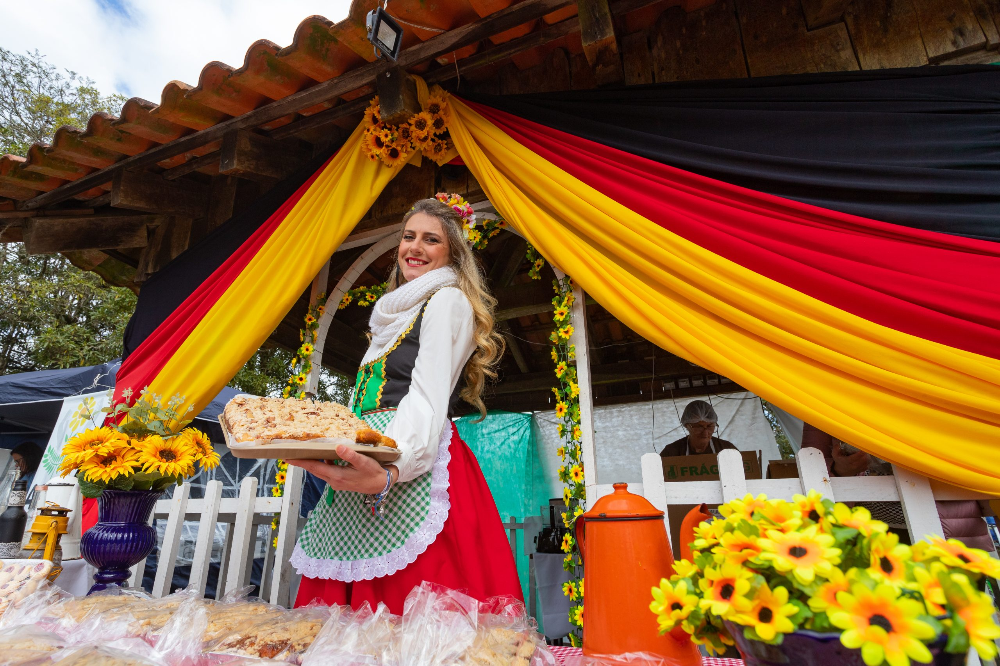
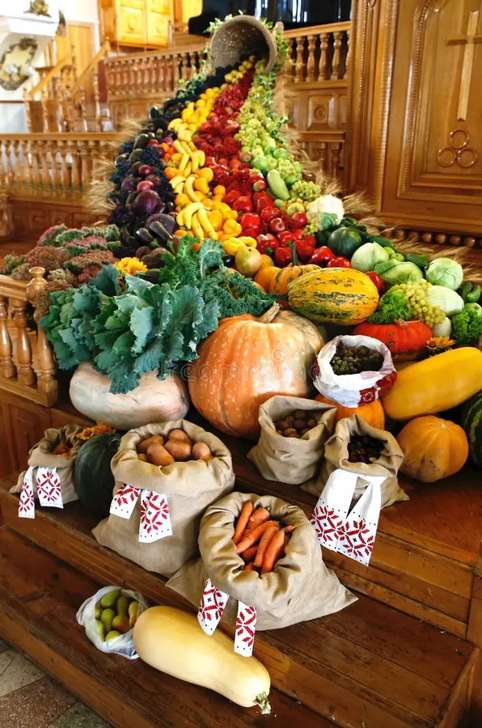
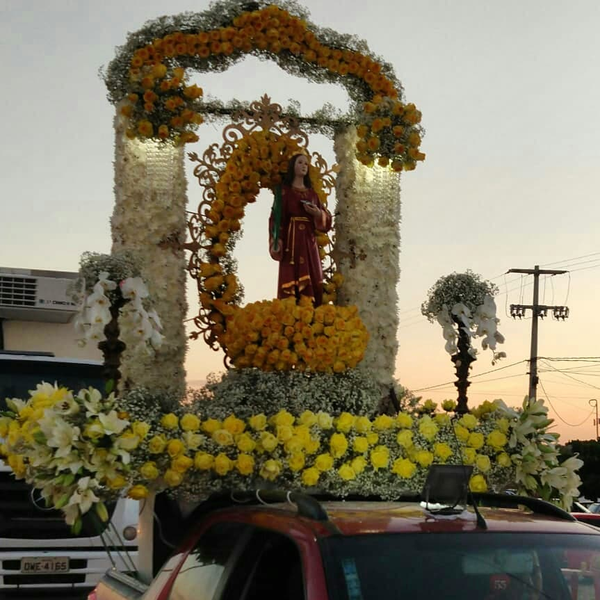
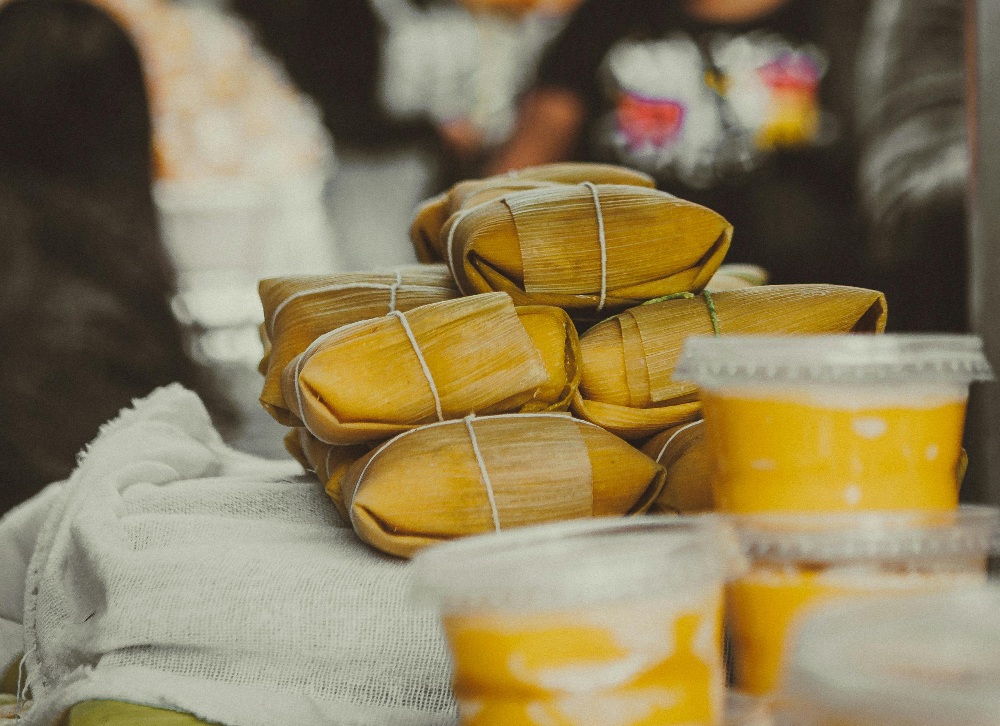
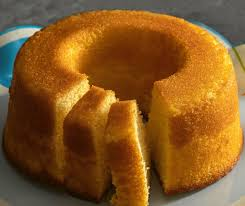

Página Inicial
Bem-vindo ao projeto "Festejando a conexão campo-cidade". Explore as seções para conhecer mais sobre nossa cultura, tradições e produtos.
Mapa Interativo de Produtos do Campo
Clique nos ícones para saber mais sobre os produtos agrícolas da região.

Galeria
Fotos das festas tradicionais do campo e da cidade.
 





Linha do Tempo
Evolução da agricultura e cultura local.
XIX
Século XIX: Início da colonização e agricultura tradicional.
XX
Século XX: Modernização e expansão agrícola.
70-80
1970-80: Integração maior entre campo e cidade.
XXI
Século XXI: Sustentabilidade e tecnologia no campo.
Receitas
Receitas típicas do campo e da cidade. Clique nos links para assistir aos vídeos.

Pamonha
Receita feita com milho verde ralado, cozida em folhas de milho.
Assistir vídeo no YouTube

Bolo de Fubá
Bolo tradicional feito com fubá, muito apreciado em festas.
Assistir vídeo no YouTube